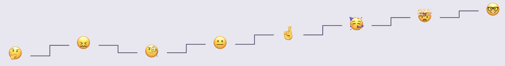
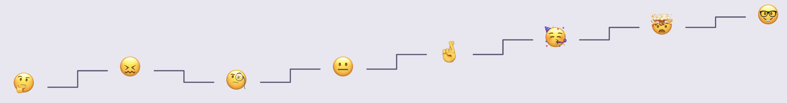

Qualitative Research
While conducting this study, our group created a proto persona of what we thought the typical user would be like for our application. Then we created a list of 10 questions to conduct a short survey that we would send off on social media platforms. We, also created a research script of 20 questions that were relevant in discovering how users locate and discover new information about some of their favorite songs.
With these questions, we each interviewed 2-3 people between the ages of 20 to 60 years of age who listen to a variety of music. These people have a large interest in and knowledge of music. These people also have an interest in movies, tv shows, social media, or other pop culture platforms since that would typically be where users might have recognized the songs from. After analyzing the research gathered, we created an affinity diagram and an empathy map to figure out the true user persona.
“Music has a great way of influencing your mood. ”
“I have a lot of curiosity…you look up the songwriter, and you find some other things…you find interesting things.”
“I like to know like samples within songs…I like to know what inspired that song.”
“I think a lot of people and myself can relate to a lot of songs and music.”


 
